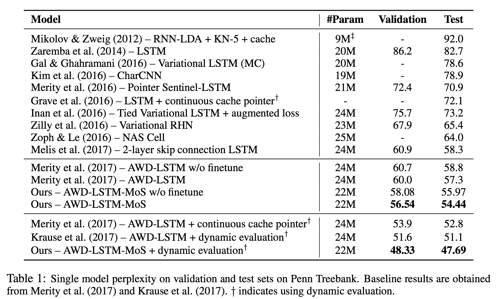
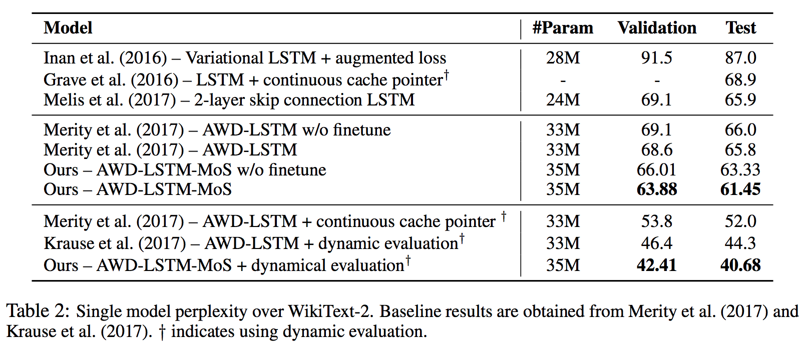
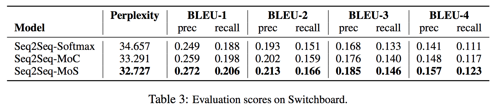
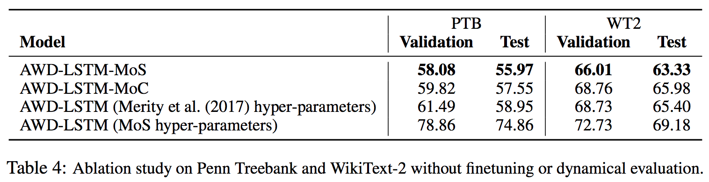
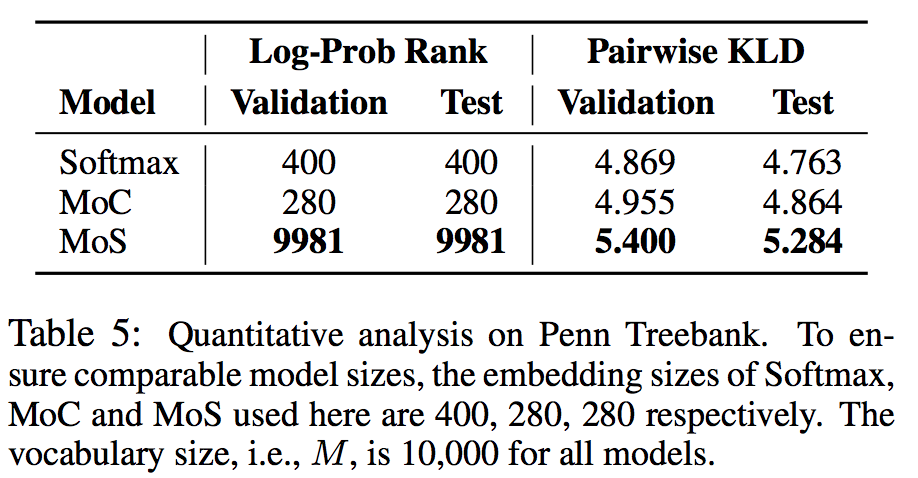
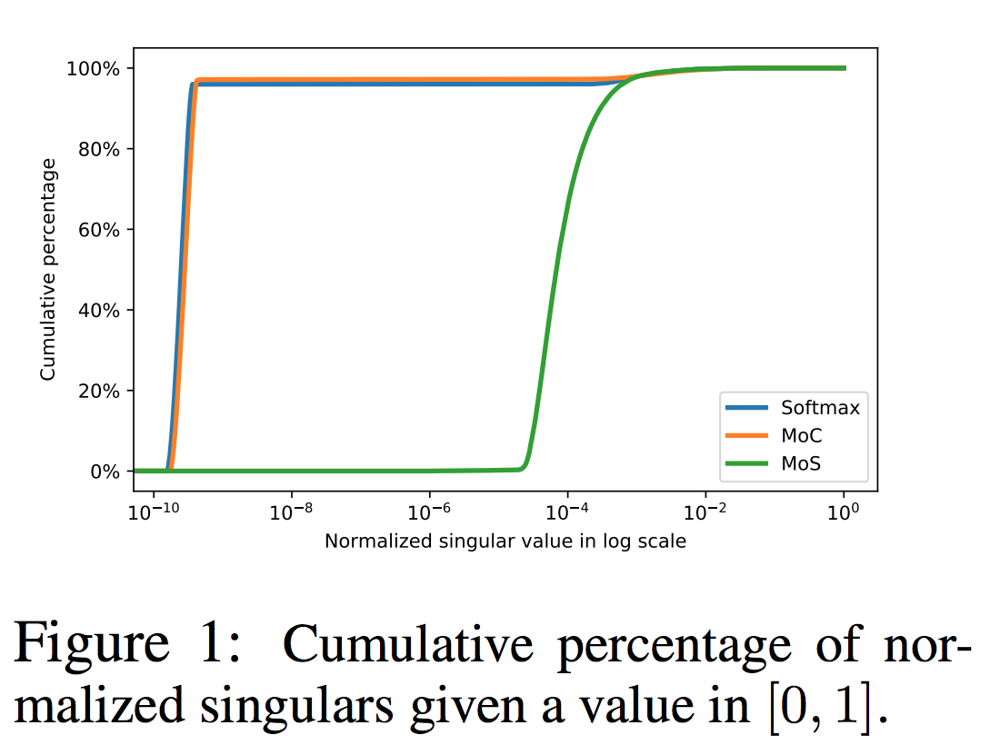
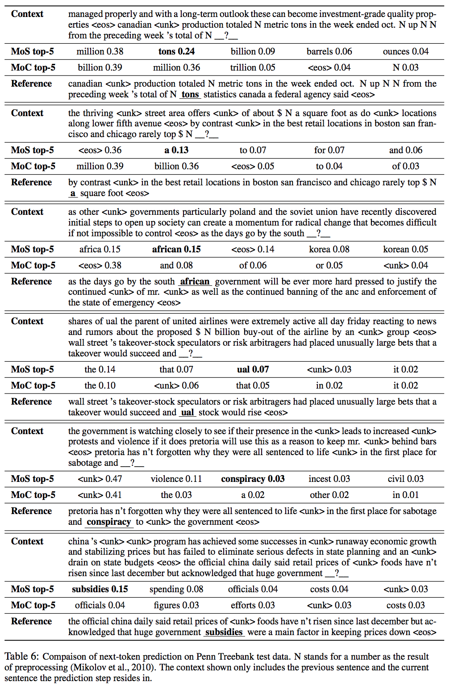

Breaking the Softmax Bottleneck: A High-Rank RNN Language Model
Довольно интересная статья о том, что простого софтмакса на выходе языковой модели недостаточно для достаточнго адекватного представления языка.
Проблема
В задаче изучения языковой модели можно усмотреть задачу матричного разложения. А именно, пусть мы моделируем \(p(X|c)\) где \(X \in \mathcal{D}\) – токен из словаря размера \(M\), а \(c\) – некоторый контекст (допустим, что множество возможных контекстов конечно1 и имеет мощность \(N\)). Так же заметим, что любая языковая модель может быть определена следующей матрицей (обозначим за \(p^*(X|c)\) генеративную модель языка, из которой мы наблюдаем семплы):
\[ A = \left( \begin{array}{ccc} \log p^*(x_1|c_1) & \dots & \log p^*(x_1|c_N) \\ & \ddots & \\ \log p^*(x_M|c_1) & \dots & \log p^*(x_M|c_N) \\ \end{array} \right) \]
Обозначим за \(W \in \mathbb{R}^{M \times D}\) матрицу эмбеддингов, т.е. такую матрицу в строке \(m\) которой записано векторное представление слова \(x_m\). За \(H \in \mathbb{R}^{N \times D}\) обозначим матрицу эмбеддингов контекстов, где в строке \(n\) записано векторное представление контекста \(c_n\). Тогда можно показать, что если мы пытаемся моделировать языковую модель с помощью софтмакса \(p(X|c) = \text{Softmax}(W H^T)\), то это эквивалентно решению задачи факторизации \[ W H^T = A' \] где \(A'\) равно \(A\) с точностью до добавления произвольных констант к строкам (всем элементам, то есть) матрицы.
Возможна ли такая факторизация? Утверждается, что операция добавления произвольных констант к строкам матрицы \(A \mapsto A'\) изменяет ранг матрицы не более чем на 1. Произведение \(W H^T\) в лучшем случае, очевидно, имеет ранг \(D\). То есть, чтобы выучить произвольно сложную языковую модель, нужно иметь векторные представления размерности как минимум \(\text{rank}(A)-1\). Авторы называют это утверждение бутылочным горлышком софтмакса (Softmax Bottleneck)
Насколько велик ранг Естественного Языка?
К сожалению, мы не можем посчитать ранг естественного языка2, поэтому в соответствующей части авторы ограничиваются спекуляциями:
- Кажется, что естественный язык очень сильно контекстно зависим. Авторы приводят пример: мы ожидаем, что за словом “Северная” будет следовать “Корея”, если речь идёт о полотической колонке, и не ожидаем такого в тексте об американской истории.
- Если бы ранк языка был невелик, людям было бы достаточно пары сотен базовых пар контекст-токен. Однако, кажется, это не так.
- Эмпирически, чем выше ранк, тем лучше.
Окей, ранг большой, но может можно сделать что-то простое?
Авторы рассматривают 2 варианта: n-грамное представление и повышение размерности. Оба непрактичны: n-грамное представление экспоненциально быстро разрастается в размере, повышение размера векторного представления до размера словаря тоже плохо масштабируется.
Смесь Софтмаксов
Предлагается для каждой пары контекст-токен \((c, x)\) генерировать \(K\)3 софтмаксов, а потом смешивать их с весами \(\pi_c\):
\[ p(x|c) = \sum_{k=1}^K \pi_{c,k} \text{Softmax}(h^T_{c,k} w_x), \quad\quad \sum_{k=1}^K \pi_{c,k} = 1 \]
В реккурентках это предлагается применять так: \(\pi_c\) получается из скрытого состояния с помощью дополнительного полносвязного слоя с софтмаксом на выходе, \(h_{c,k}\) получаются полносвязным слоем с какой-нибудь обычной нелинейностью (в статье авторы используют \(\tanh\)), из которых потом с помощью полносвязного слоя (который неявно выучивает эмбеддинги токенов) генерируются софтмаксы для смешивания.
В чём идея этой, казалось бы, бесмысленной операции? Как я понимаю, хочется, чтобы \(A\) перестала быть линейной по эмбеддингам. Тогда можно воспользоваться всеми плюшкам нелинейностей, благодаря которым работают нейросети4.
Далее авторы говорят, что если вы вдруг смешаете логиты, а не софтмаксы, то ничего путного из этого не выйдет, но это и так очевидно, мы же тогда получим обычные эмбеддинги.
Эксперименты
Language Modeling авторы оценивали по перплексии на Peтn Treebank (PTB):

И на WikiText-2 (WT2):

В доказательство общности предлагаемого подхода авторы предлагают результаты для моделирования диалогов с помощью seq2seq’а, где выходной softmax заменён на предлагаемый ими вариант. Здесь MoS – Mixture of Softmaxes (предлагаемый вариант), а MoC – Mixture of Contexts – как если бы мы вдруг смешали логиты (это, как мы уже знаем, проблему не решает)

Ablation study
Чтобы удостовериться, что это именно смесь софтмаксов помогает, авторы всячески сравнивают смесь софтмаксов (MoS) со смесью контекстов (MoC) с одинаковым количеством параметров. Смесь контекстов на удивление работает лучше обычного софтмакса, но только на PTB. Тем не менее, смесь софтмаксов стабильно лучше.

Анализ рангов
Давайте построим матрицы, подобные \(A\) для софтмакса, смеси контекстов и смеси софтмаксов (для реального датасета, конечно, построить её сложно, мы ведь не наблюдаем всех элементов матрицы). Кроме того, авторы предполагают, что модели, хорошо захватывающие контекст, будут иметь высокую KL дивергенцию для распределений на следующий токен при условии разных контекстов \(D_{KL}(p(X|c)||p(X|c'))\). Соответственно, предлагается случайно насемплировать сколько-то пар контекстов и посчитать среднюю KL дивергенцию между соответствующими условными распределениями.

Видно, что и ранг у предложенной модели сильно выше, и средняя KL дивергенция.
А ещё авторы проанализировали CDF отнормированных сингулярных чисел получающихся матриц. Видно, что и у софтмакса, и у смеси контекстов большинство сигнулярных чисел довольно мало, а вот у смеси софтмаксов почти все с.ч. больше.

Анализ семплов
Наконец, авторы посмотрели на семплы (полученные бимсёрчем на PTB) смеси контекстов (раз она работает чуть лучше софтмакса) и смеси контекста и попытались сделать далеко идущие выводы. Я их копировать не буду, но можете сами посмотреть на семплы:

Резюме
Довольно интересная работа, показывающая, что сколько бы совершенную RNN’ку вы ни имели, всегда будет бутылочное горлышко в виде размерности векторного представления токена и контекста. В этой статье предлагается, по-сути, нелинейное (ну, существенно более нелинейное, чем нормированная экспонента скалярного произведения) преобразование этих векторных представлений, что позволяет повысить выразительную силу получающейся вероятностной модели. Код доступен на гитхабе.
Вместе с тем, неочевидно, какой эффект это всё оказывает на время выполнения. Кажется, что последний слой с софтмаксами очень толстый и считать его много раз не очень приятно. С другой стороны, возможно такой подход позволит пользоваться эмбеддингами меньшей размерности без значительных потерь в качестве. К сожалению, на эти вопросы статья не отвечает.
А ещё мне кажется, что нужно подумать в сторону тензорных разложений!
Бесконечное количество контекстов не ломает рассуждений, но заставляет нас заменить инструмент линейной алгебры на функциональный анализ.↩
Интересно было бы посмотреть на ранги каких-нибудь несильно сложных грамматик, а потом попробовать их выучить.↩
Количество использованных компонент смеси тщательно скрыто в самом конце статьи, в аппендиксе Б, и составляет 15.↩
Тут можно возразить, что у нас уже есть нейросеть под эмбеддингами, но важно понимать, что та нейросеть только генерирует эти векторные представления, а комбинируются они всё-таки линейно. Это как если бы вы использовали линейную регрессию, веса которой генерировались бы нейросетью. Повысило ли бы это выразительную способность модели?↩